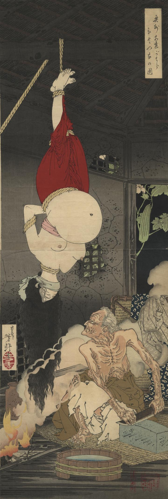

京都の某公家の乳母に岩手という女が、育てていた姫の病気を治すため、妊婦の生き肝を求めて奥州安達原まで旅をする。妊婦を見つけた岩手は躊躇なく殺害するが、妊婦は実の娘であった。岩手は悲狂に暮れ、遂に鬼婆となってしまったという。
著作者：芳年／出典：親書誌：U426_nichibunken_0307：奥州安達がはらひとつ家の圖；オウシュウ アダチガハラ ヒトツヤ ノ ズ／日付：2014／資源識別子：U426_nichibunken_0307_0001_0000
Copyright (c)2010- International Research Center for Japanese Studies, Kyoto, Japan. All rights reserved.